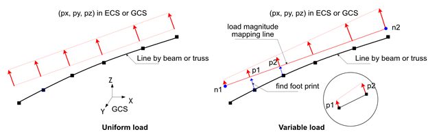
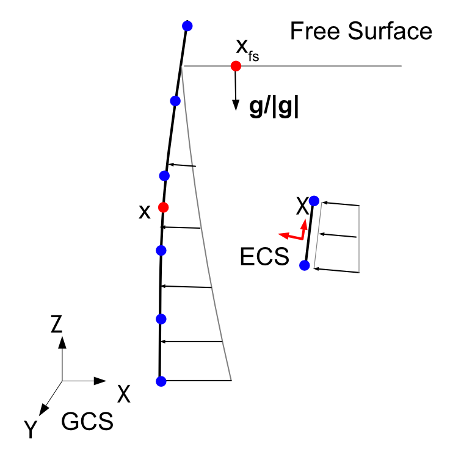
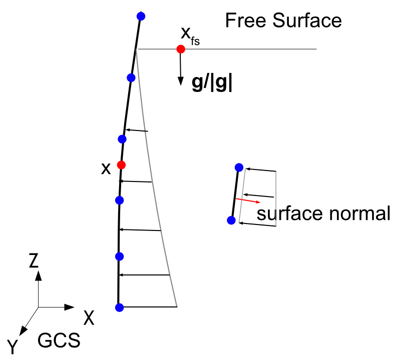
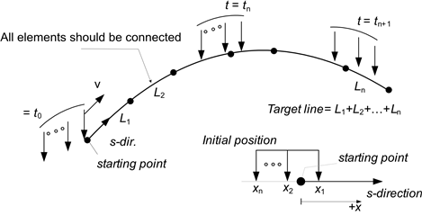
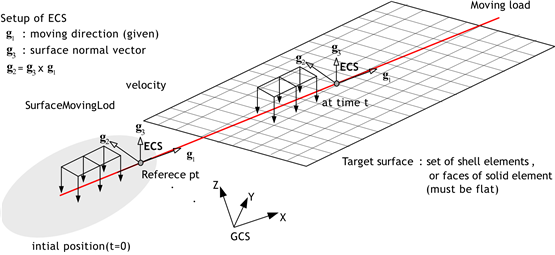
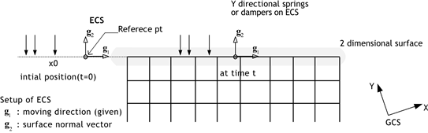
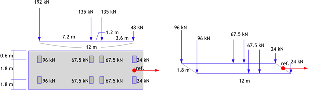
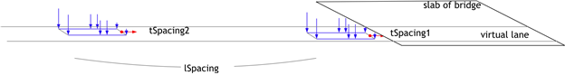

6. Load
하중은 *Load로 지정한다. 자신만의 이름을 가지며 이름은 중복하여 지정할 수 없다. *Load는 해석단계내에서 어떤 하중 값이 주어진다는 점에서 *Constraint와 구분된다. 예를 들어 변위하중(Displacement)는 *Load이지만, 변위가 0인 경계조건(Support)은 *Constraint이다.
하중은 정적 또는 동적(시간의존)으로 가력될 수 있다. 예를 들어 *Load, Type=Concentric, *Load, Type=Displacement, *Load Type=Gravity, *Load, Type=Temperature, *Load, Type=LineDistributed, *Load, Type=SurfaceDistributed은 그 크기만을 지정하면 정적 가력 하중이지만, 시간함수를 같이 지정하면 동적가력하중이 된다. 반면 *Load, Type=LineMoving, *Load, Type=SurfaceMoving, *Load, Type=PedestrianMoving, *Load, Type=Earthquake 등은 정적으로 가력할 수 없고 항상 시간에 의존하는 하중이다.
하중이 해석단계(*Step)에 적용될 때 세가지 상태(Created, Propagated, Faded)가 가능하다. Created는 현 해석단계에서 생성되었다는 것을, Propagated는 이전 해석단계에서 생성되고 현 해석단계에서 유지됨을, Faded는 현 해석단계에서 없어짐을 의미한다. 하중이 정적하중/동적하중 여부, 해석단계가 물리적인 시간에 의존하느냐에 따라 하중의 상태와 하중이 작용하는 방식이 다르게 된다.
▪ 시간 의존 해석 단계
- 준정적해석(
*Step, Type=Static, Quasi)과 동해석(*Step, Type=Dynamic)이 있음. - Create, Propagated 상태만 가능하고 두 상태에서 작동방식이 동일
- Faded 상태는 존재할 수 없음(하중을 비활성화하는 순간 즉시 삭제)
- 정적가력하중은 해석단계내 시간변화와 무관하게 주어진 크기만큼 가력된다.
- 동적가력하중은 해석단계에서 정의되는 시간에 따라 가력된다.
▪ 정적해석 단계
- 정적해석(
*Step, Type=Static,*Step, Type=Static, Arclength)을 의미하며 하중계수의 크기에 따라 하중 가력 - 정적가력하중은 Created 인 경우 하중계수의 크기에 따라 하중이 가력된다.
- 동적가력하중은 Created 인 경우 하중이 가력되지 않음(물리적인 시간 흐름이 없으므로)
- Propagated인 경우 이전 단계의 최종 하중이 유지된다.
- Faded인 경우 이전 단계의 최종 하중이 현 해석이 끝날 때 0이되도록 크기가 감소한다.
- 온도하중(
*Load, Type=Temperature)은*Load, Type=Static,Arclength에서 Create나 Faded 상태가 될 수 없다.
6.1 *Load
Define load
*Load, Type=load_type, Name=load_name, ...
...
Keyword line
- Type=type: 하중의 종류
- Concentric: 절점에 가력되는 집중하중
- Displacement: 0이 아닌 값을 가지는 변위하중
- SeismicRelative: 상대운동 정식화를 사용하는 지진가속도 이력 하중
- Gravity: 중력가속도에 의한 자중
- Temperature: 요소에 작용하는 온도변화로 인한 하중
- LineDistributed: 보 요소 또는 트러스 요소로 구성된 라인에 작용하는 분포하중
- SurfaceDistributed: 요소의 면으로 구성된 면에 작용하는 분포 하중
- LineMoving: 보 요소 또는 트러스 요소로 구성된 라인에 작용하는 이동하중
- SurfaceMoving: 요소의 면으로 구성된 면에 작용하는 이동 하중
- PedestrianMoving: 요소의 면으로 구성된 면에 작용하는 도보 하중
- Name=load_name: 하중의 이름
6.1.1 *Load, Type=Concentric
절점에 가력되는 집중하중
*Load, Type=Concentric, Name=name, Func=timeFunction
targetNode|targetNGroup, oneDof, value, fnIdx, CS=orientation
...
Keyword line
- Func=timeFunction: 시간의존해석(
*Step, Type=Static, Quasi와*Step, Type=Dynamic)시 사용할 시간 함수(optional).
First dataline and subsequent datalines
- targetNode: target node (required)
- targetNGroup: 절점 하중을 부과할 node group(required). targetNGroup은 nset, surface, 절점번호패턴(
start:end:spacing형태, spacing은 1일 때 생략 가능) 형식으로 지정하며, surface로 지정하는 경우 surface 내의 절점들을 의미. - oneDof: Target DOF. Available DOFs are X, Y, Z, RX, RY, RZ, T, PA, and PS. PA denotes an acoustic-pressure DOF load, and PS denotes a seepage-pressure DOF load. Combinations such as X|Y are not allowed.
- value: Applied load value (required). If oneDof is X, Y, or Z, the unit is [F]. If oneDof is RX, RY, or RZ, the unit is [F*L]. If oneDof is T, the unit is [F*L/T]. If oneDof is PA, the unit is [F/L]. If oneDof is PS, the unit is [L^3/T].
- fnIdx: timeFunction 내의 적용하는 시계열 함수 인덱스(1-based index) (optional, default는 1).
- CS=orientation: 집중하중이 적용될 좌표계.
*CoordinateSystem, Type=Orientation으로 정의된 이름을 지정. 생략 시 GCS 적용 (optional)
데이터라인의 첫항은 nset, surfce, 절점번호패턴/절점번호 순으로 가능한 대상을 찾는다. 미리 정의한 nset, surface의 이름이 숫자로 이루어질 수 있으므로 주의한다.
중복해서 특정 절점 자유도를 지정한 경우 오류없이 적용된다. 즉 그 자유도의 하중은 합산하여 적용된다.
국부좌표계를 지정하면, 주어진 좌표계를 기준으로 하중을 가력한다. 내부적으로 주어진 입력값 하중은 변환하여 GCS 상에서 가력된다. 해석 결과는 GCS 기준이다. 만약 주어진 국부좌표계를 기준으로 결과가 필요한 경우 *Print, *History에서는 별도로 지정해야 한다. *Output에서는 국부좌표계를 지정할 기능을 없으나 hfStudio로 포스트프로세싱시 국부좌표계상의 결과를 구할 수 있다.
Example
*Load, Type=Concentric, Name=A
1001, X, 10.
*Funtion, Type=MultiLinear, Name=Cyclic
0, 0
1, 1
2, 0
3, 1
4, 0
*Load, Type=Concentric, Name=B, Func=Cyclic
base, X, 10.
*Funtion, Type=TimeSignal, Name=timeLoad
0.02, 1024 # dt, ntime
elcenX.dat, 1, 3.01
elcenYZ.dat, 2, 3.01
*Load, Type=Concentric, Name=TimeLoading, Func=timeLoad
101, X, 1, 1
101, Y, 1, 2
101, Z, 1, 3
*CoordinateSystem, Type=Orientation, Name=inc
1,1,0, 0,1,0
*Load, Type=Displacement Name=InclinedLoad
101, X, 1. CS=inc
6.1.2 *Load, Type=Displacement
0이 아닌 값을 가지는 변위하중
*Load, Type=Displacement, Name=name, Func=timeFunction
targetNode|taregtNGroup, oneDof, value, {fnIdD, fnIdV, fnIdA}|D=fnIdD|V=fnIdV|A=fnIdA, CS=ocs}
...
Keyword line
- Func=timeFunction: 시간의존해석(
*Step, Type=Static, Quasi와*Step, Type=Dynamic)시 사용할 시간 함수(optional).
First dataline and subsequent datalines
- targetNode: target node (required)
- targetNGroup: 절점 변위를 부과할 node group(required). targetNGroup은 nset, surface, 절점번호패턴(
start:end:spacing형태, spacing은 1일 때 생략 가능) 형식으로 지정하며, surface로 지정하는 경우 surface 내의 절점들을 의미. - oneDof: Target DOF. Available DOFs are X, Y, Z, RX, RY, RZ, P, T, and H. H is a convenience input for total head and is internally converted to P. Combinations such as X|Y are not allowed. (required)
- value: Prescribed value (required). If oneDof is X, Y, or Z, the unit is [L]. If oneDof is RX, RY, or RZ, it is dimensionless. If oneDof is P, the unit is [F/L^2]. If oneDof is T, the unit is [K]. If oneDof is H, the unit is [L].
- fnIdD, fnIdV, fnIdA: 변위 , 속도, 가속도 시간 함수의 timeFunction 내의 시계열 함수 인덱스(1-based index) (optional, default는 1). 만약 0을 지정하면 대응하는 이력값이 항상 0으로 취급.
*Step, Type=Static, Quasi에서는 변위를,*Step, Type=Dynamic에서는 변위, 속도, 가속도를 사용 - A=fnIdA: timeFunction 내의 가속도 시간 함수의 인덱스(1-based index). 속도 및 변위 함수는 자동적분. timeFunction은
*Function, Type=TimeSignal이어야 함. - V=fnIdV: timeFunction 내의 속도 시간 함수의 인덱스(1-based index). 가속도 및 변위 함수는 자동미분 및 자동적분. timeFunction은
*Function, Type=TimeSignal이어야 함. - D=fnIdD: timeFunction 내의 변위 시간 함수의 인덱스(1-based index). 속도 및 가속도 함수는 자동미분. timeFunction은
*Function, Type=TimeSignal이어야 함. - CS=ocs: 변위하중이 적용될 좌표계. X, Y, Z, RX, RY, RZ 자유도에만 적용.
*CoordinateSystem, Type=Orientation으로 정의된 이름을 지정. 생략 시 GCS 적용 (optional)
데이터라인의 첫항은 nset, surfce, 절점번호패턴/절점번호 순으로 가능한 대상을 찾는다. 미리 정의한 nset, surface의 이름이 숫자로 이루어질 수 있으므로 주의한다.
중복해서 특정 절점 자유도를 지정한 경우 변위 크기가 같으면 잘못된 해석 결과를 도출할 수 있다.
A=fnIdxA, V=fnIdxV, D=fnIdxD 등을 통해 미분, 적분한 시간이력은 name-generated.csv에 출력된다.
국부좌표계를 지정하면, 주어진 좌표계를 기준으로 변위를 가력한다. 내부적으로 MPC(multi-point constraint)가 부가되는 방식으로 처리된다. 해석 결과는 GCS 기준이다. 만약 주어진 국부좌표계를 기준으로 결과가 필요한 경우 *Print, *History에서는 별도로 지정해야 한다. *Output에서는 국부좌표계를 지정할 기능을 없으나 hfStudio로 포스트프로세싱시 국부좌표계상의 결과를 구할 수 있다.
P는 acoustic element의 동압력, seepage element의 pore pressure를 나타낸다. 어떤 절점이 acoustic element와 seepage element에 동시에 연결되어서는 안 되며, 이 경우는 모델링 오류로 취급한다. Seepage 요소를 사용할 때 H 기호를 통해 total head를 지정할 수 있다. 이때 pore pressure는 (weightDensity) * (totalHead – z)로 변환된다. 이 변환을 위해서는 물의 weightDensity가 필요하며, 이 값은 절점에 연결된 seepage 요소로부터 추출한다. 절점에 연결된 seepage 요소가 여러 개인 경우 weightDensity는 동일한 값이어야 하며, 허용오차는 1E-5로 한다.
Example
*Load, Type=Displacement Name=A
1001, X, 10.
*Load, Type=Displacement, Name=C
101, X, 100
101, X, 200 # Raising error
*Load, Type=Displacement, Name=Pressure
101, P, 100
*Load, Type=Displacement, Name=Head
101, H, 100
*Funtion, Type=MultiLinear, Name=Cyclic
0, 0
1, 1
2, 0
3, 1
4, 0
*Load, Type=Displacement Name=B, Func=Cyclic
base, X, 10.
*Funtion, Type=TimeSignal, Name=motion
0.02, 1024 # dt, ntime
elcenD.dat, 1, 3.01
elcenVA.dat, 2, 3.01
*Load, Type=Displacement, Name=B, Func=motionA
base, X, 1, 1, 2, 3
*Load, Type=Displacement, Name=B, Func=motionB
baseB, X, 1, A=1 # V, D is generated
*CoordinateSystem, Type=Orientation, Name=inc
1,1,0, 0,1,0
*Load, Type=Displacement, Name=InclinedLoad
101, X, 0.1, CS=inc
6.1.3 *Load, Type=SeismicRelative
상대운동 정식화를 사용하는 지진가속도 이력 하중
*Load, Type=SeismicRelative, Name=name, Func=timeFunction
x, y, z, fnIdx
...
Keyword line
- Func=timeFunction: 지진가속도 이력(required)
First dataline and subsequent datalines
- x,y,z: directional vector of applying acceleration history. 입력된 벡터는 크기 1로 정규화됨.
- fnIdx: timeFunction 내의 적용하는 시계열 함수 인덱스(1-based index) (optional, default는 1).
*Load, Type=SeismicRelative는 동적해석에서만 사용가능하며, 계산된 응답은 입력된 지반운동에 대한 상대운동이다. 전체운동으로 주어진 지지점에 운동을 가력하는 *Load, Type=Displacement와는 계산되는 응답이 상대응답이라는 점에 주의해야 한다.
*Load, Type=SeismicRelative에서는 외력이 다음과 같이 작용한다.
Acoustic solid 요소가 사용된 모델에서도 적용가능하며 이때는 다음과 같다.
Example
*Function Type=TimeSignal Name=acc1d
0.02, 2670
BaseMotionX.inp, 1, 1 # file, nseries, scalFactor
*Load, Type=SeismicRelative, Name=Earthquake1D, Func=acc1d
1,0,0
*Function Type=TimeSignal Name=acc3d
0.02, 2670
BaseMotionX.inp, 1, 1 # file, nseries, scalFactor
BaseMotionY.inp, 1, 1 # file, nseries, scalFactor
BaseMotionZ.inp, 1, 1 # file, nseries, scalFactor
*Load, Type=SeismicRelative, Name=Earthquake3D, Func=acc3d
1,0,0,1
0,1,0,2
0,0,1,3
6.1.4 *Load, Type=Gravity
중력가속도에 의한 자중
*Load, Type=Gravity Name=name Func=timeFunction
targetElset, gx, gy, gz, fnIdx
...
Keyword line
- Func=timeFunction: 시간의존해석(*Step, Type=Static, Quasi와 *Step, Type=Dynamic)시 사용할 시간 함수(optional). 함수가 여러 계열(series)을 가지는 경우 첫 번째 계열이 사용.
First dataline and subsequent datalines
- targetElset: target elset(required)
- gx, gy, gz: Components of the gravity vector [L/T^2] (optional, default is 0,0,0).
- fnIdx: timeFunction 내의 적용하는 시계열 함수 인덱스(1-based index) (optional, default는 1).
Gravity Load가 활성화되기 위해서는 적용되는 요소의 물성치로 질량이 주어져 있어야 한다.
Example
*Load, Type=Gravity Name=SelfWeight
Slab, 0. 0. -9.81
Girder, 0. 0. -9.81
6.1.5 *Load, Type=Temperature
요소에 작용하는 온도변화로 인한 하중
*Load, Type=Temperature, Name=name Func=timeFunction
targetElset, T, Ty, Tz, fnIdx
...
Keyword line
- Func=timeFunction: 시간의존해석(*Step, Type=Static, Quasi와 *Step, Type=Dynamic)시 사용할 시간 함수(optional). 함수가 여러 계열(series)을 가지는 경우 첫 번째 계열이 사용.
First dataline and subsequent datalines
- targetElset: target elset(required)
- T: Uniform temperature change [K] (optional, default 0.)
- Ty, Tz: Temperature gradient changes [K/L]. (optional, default 0,0)
- fnIdx: timeFunction 내의 적용하는 시계열 함수 인덱스(1-based index) (optional, default는 1).
요소에 동일한 온도변화(uniform temperature change)가 가해질 때 사용
▪ 주의
- 온도하중은 *Step, Type=Static,Arclength에서는 *Activate 또는 *Inactivate 될수 없다. 다만 이전 해석에 가력된 후 그 크기가 유지되는 것은 가능하다. 즉, Created, Faded 단계가 불가능하고 Propagated 상태만 가능하다.
Example
*Load, Type=Temperature Name=A
beam, 10.
6.1.6 *Load, Type=LineDistributed
보 요소 또는 트러스 요소로 구성된 라인에 작용하는 분포하중
*Load, Type=LineDistributed, Name=name, Func=timeFunction
line, GCS|ECS, px, py, pz, mx, my, mz, fnIdx
line, GCS|ECS, n1, n2, px1, py1, pz1, mx1, my1, mz1, px2, py2, pz2, mx2, my2, mz2, fnIdx
line, HydroStaticPressure, gamma, gdx, gdy, gdz, fsx, fsy, fsz, width, +Y|-Y|+Z|-Z, fnIdx
...
Keyword line
- Func=timeFunction: 시간의존해석(*Step, Type=Static, Quasi와 *Step, Type=Dynamic)시 사용할 시간 함수(optional). 함수가 여러 계열(series)을 가지는 경우 첫 번째 계열이 사용.
First dataline and subsequent datalines
- line: Target element set composed of beam or truss elements. (required)
- GCS|ECS: Coordinate system in which the distributed load is defined. (required)
- HydroStaticPressure: 정수압을 등가 선하중으로 가력하는 특수 모드. 결과 하중은 항상 요소좌표계(ECS) 기준으로 적용된다.
- px, py, pz, mx, my, mz: Uniformly distributed load components. px, py, pz는 단위 길이당 분포힘 [F/L]이고 mx, my, mz는 단위 길이당 분포모멘트 [F]이다. 2D beam 요소에서는 px, py, mz만 사용된다.
T3D2truss 요소에서는 px, py, pz 분포힘은 등가 절점하중으로 적용되고,GCS와ECS입력에서 지정한 mx, my, mz 분포모멘트는 적용되지 않는다. - n1, n2, px1, ..., mz2: Applies distributed load components px1 to mz1 at node n1 and px2 to mz2 at node n2, respectively, and interpolates the values between them using the line shape functions. The units of px1, py1, pz1, px2, py2, and pz2 are [F/L], and the units of mx1, my1, mz1, mx2, my2, and mz2 are [F].
- gamma:
HydroStaticPressure에 사용할 유체 단위중량 [F/L^3]. 밀도와 중력가속도로부터 입력할 때는 \(\gamma=\rho|g|\)를 사용한다. - gdx, gdy, gdz: 중력 방향 벡터 성분. 내부에서 단위벡터로 정규화된다.
- fsx, fsy, fsz: 자유수면 위 임의 점의 좌표 [L].
- width: 압력 [F/L^2]을 선하중 [F/L]로 환산하기 위한 tributary width 또는 단위 두께 [L].
- +Y|-Y|+Z|-Z:
HydroStaticPressure등가 선하중이 작용하는ECS횡방향. 이 토큰은GCS가 아니라 각 보 요소의ECS기준 방향이다. 2D beam 요소에서는+Y또는-Y만 사용한다. - fnIdx: Index of the time series within timeFunction (1-based index) (optional, default is 1).
라인은 보 요소 또는 트러스 요소만으로 이루어져야 하며(두 요소를 섞을 수 없음), 연결된 선일 필요는 없다. T3D2 truss 요소에서는 GCS, ECS, HydroStaticPressure 입력 모두 병진 자유도에 대한 등가 절점하중으로 계산된다. 다만 GCS와 ECS 입력에서 지정한 mx, my, mz 분포모멘트는 truss 요소의 회전 자유도가 없으므로 적용되지 않는다.
GCS|ECS 분포하중
하중을 사다리꼴 형태로 가력하는 경우에는 그림과 같이 각 선분을 이루는 요소 절점의 하중 크기를 n1, n2 절점을 잇는 선분에 매핑하여 찾는다. 이 경우 mapping line으로 수선을 찾지 못하는 보 요소에는 하중이 가력되지 않으므로 주의한다.

Fig. 6.2-1. Line Distributed Load
HydroStaticPressure
유체에 의한 정수압은 중력 방향 벡터와 자유수면 위의 한 점 좌표 \(\mathbf x_{fs}\)를 지정하여 계산할 수 있다. 보요소 위의 점 \(\mathbf x\)에서 압력은 다음과 같다.
여기에서 \(\gamma\)는 유체의 단위중량, \(\hat{\mathbf g}\)는 중력 방향 단위벡터이다. 보요소에 가력되는 등가 선하중 크기는 폭 b를 고려하여 다음과 같다.
계산된 하중은 선택한 ECS 횡방향으로 다음과 같이 변환되어 적용된다.
여기에서 \(\mathbf e_{dir}\)은 요소좌표계 기준 +Y, -Y, +Z, -Z 중 하나이다. 계산된 하중은 보요소 길이 방향 적분점에서 평가되며, *Control, NonsmoothIntegrationLevel=level에서 지정한 적분 차수로 등가 절점하중에 적분된다. 자유수면이 보요소 중간을 자르는 경우에는 NonsmoothIntegrationLevel을 높이면 잠김/비잠김 경계를 더 세밀하게 반영할 수 있다. 보요소 ECS 방향의 일관성은 사용자가 보장해야 한다.

Fig. 6.2-1a. Line Hydrostatic Pressure
Example
*Load, Type=LineDistributed, Name=Load1
side1, GCS, 0.,10.,1.
*Load, Type=LineDistributed Name=Load2
side1, ECS, 1, 2, 10.,0.,0.,0,0,0, 20.,0.,0.,0,0,0
*Load, Type=LineDistributed,ECS Name=Load3
side1, ECS, 10.
side2, ECS, 0.,10.,1.,0,0,0
side3, ECS, 1, 2, 10.,0.,0.,0,0,0,20.,0.,0.,0,0,0
*Load, Type=LineDistributed, Name=HydroLine
lining, HydroStaticPressure, 9810, 0, 0, -1, 0, 0, 20, 1.0, -Y
6.1.7 *Load, Type=SurfaceDistributed
요소의 면으로 구성된 면에 작용하는 분포 하중
*Load, Type=SurfaceDistributed, Name=name, Func=timeFunction
surface, Pressure|AcousticFlux|SeepageFlux, p, fnIdx
surface, Pressure|AcousticFlux|SeepageFlux, n1, n2, p1, p2, fnIdx
surface, Pressure|AcousticFlux|SeepageFlux, n1, n2, n3, p1, p2, p3, fnIdx
surface, Pressure|AcousticFlux|SeepageFlux, n1, n2, n3, n4, p1, p2, p3, p4, fnIdx
surface, HydroStaticPressure, gamma, gdx, gdy, gdz, fsx, fsy, fsz, +N|-N, fnIdx
surface, Traction, tx, ty, tz, fnIdx
surface, Traction, n1, n2, tx1, ty1, tx2, ty2, fnIdx
surface, Traction, n1, n2, n3, tx1, ty1, tz1, tx2, ty2, tz2, tx3, ty3, tz3, fnIdx
surface, Traction, n1, n2, n3, n4, tx1, ty1, tz1, tx2, ty2, tz2, tx3, ty3, tz3, tx4, ty4, tz4, fnIdx
...
Keyword line
- Func=timeFunction: 시간의존해석(*Step, Type=Static, Quasi와 *Step, Type=Dynamic)시 사용할 시간 함수(optional). 함수가 여러 계열(series)을 가지는 경우 첫 번째 계열이 사용.
First dataline
- surface: Target surface
- Pressure|HydroStaticPressure|Traction|AcousticFlux|SeepageFlux: Load type selector.
- p: Uniform scalar boundary load. If the load type is Pressure, the unit is [F/L^2]. If the load type is AcousticFlux, the unit is [F/L^3]. If the load type is SeepageFlux, the unit is [L/T].
- gamma:
HydroStaticPressure에 사용할 유체 단위중량 [F/L^3]. 밀도와 중력가속도로부터 입력할 때는 \(\gamma=\rho|g|\)를 사용한다. - gdx, gdy, gdz: 중력 방향 벡터. 내부에서 정규화하므로 방향만 사용된다.
- fsx, fsy, fsz: 자유수면 위의 한 점 [L]. 2차원 surface에서는 적분점 좌표를 \(z=0\)으로 평가하므로, 방향과 자유수면 점을 XY 평면에서 일관되게 정의한다.
- +N|-N:
HydroStaticPressure의 surface normal 방향 선택자(optional, default는-N).-N은 surface normal의 반대 방향으로,+N은 surface normal 방향으로 압력을 적용한다. - n1, n2, p1, p2: Applies p1 and p2 at nodes n1 and n2, respectively, and interpolates the values between them. The units of p1 and p2 are the same as p. Applicable to 2D surfaces formed by the faces of 2D solid elements.
- n1, n2, n3, p1, p2, p3: Applies p1, p2, and p3 at nodes n1, n2, and n3, respectively, and interpolates the values between them using triangular shape functions. The units of p1, p2, and p3 are the same as p. Applicable to 3D surfaces formed by the faces of 3D solid elements or shell elements.
- n1, n2, n3, n4, p1, p2, p3, p3: Applies p1, p2, p3, and p4 at nodes n1, n2, n3, and n4, respectively, and interpolates the values between them using quadrilateral shape functions. The units of p1, p2, p3, and p4 are the same as p. Applicable to 3D surfaces.
- tx, ty, tz: Uniform traction load [F/L^2]. For 2D surfaces, tz is ignored.
- n1, n2, tx1, ty1, tx2, ty2: Variable traction values [F/L^2] for 2D surfaces.
- n1, n2, n3, tx1, ty1, tz1, tx2, ty2, tz2, tx3, ty3, tz3: Variable traction values [F/L^2] for 3D surfaces with triangular interpolation.
- n1, n2, n3, tx1, ty1, tz1, ..., tx4, ty4, tz4: Variable traction values [F/L^2] for 3D surfaces with quadrilateral interpolation.
- fnIdx: Index of the time series within timeFunction (1-based index) (optional, default is 1).
요소의 면(face)으로 구성된 surface에 작용하는 분포하중이다. Surface는 2차원 솔리드 요소의 face 또는 3차원 솔리드 요소와 쉘 요소의 face로 구성되어야 하며, 2차원 요소 face와 3차원 요소 face를 섞을 수 없다.
Pressure|AcousticFlux|SeepageFlux|Traction 분포하중
Pressure, AcousticFlux, SeepageFlux는 스칼라 surface 하중이고, Traction은 GCS에서 정의되는 표면력 벡터이다. Pressure는 surface 법선 방향의 반대 방향으로 작용하고, Traction은 입력한 벡터 방향으로 작용한다.
SeepageFlux의 [L/T]에서 [T]는 Seepage, Transient step의 TUnit을 따른다. 따라서 transient seepage 해석에서는 global UnitSystem의 time field와 별도로, 침투 해석 입력들이 서로 일관되다면 day, hr 등 필요한 시간 기준을 사용할 수 있다.
등분포 하중은 입력값을 target surface 전체에 일정하게 적용한다. Variable 하중은 하중값을 매핑면의 코너 절점에서 정의하고, 각 face의 적분점에서 매핑면으로 수선을 내려 값을 보간한다. 각 face는 *Control, NonsmoothIntegrationLevel=level에서 지정한 적분 차수로 적분된다. 예를 들어 4절점 face의 기본값은 5x5 적분점이다.

Fig. 6.2-3. Surface Distributed Load
HydroStaticPressure
유체에 의한 정수압은 중력 방향 벡터와 자유수면 위의 한 점 좌표 \(\mathbf x_{fs}\)를 지정하여 계산할 수 있다. Surface 적분점 \(\mathbf x\)에서 압력은 다음과 같다.
여기에서 \(\gamma\)는 유체의 단위중량, \(\hat{\mathbf g}\)는 중력 방향 단위벡터이다. 기본값 또는 -N을 지정하면 계산된 압력이 surface 법선 방향의 반대 방향으로 다음과 같이 적용된다.
+N을 지정하면 같은 압력 크기를 surface normal 방향으로 적용한다.
여기에서 \(\mathbf n\)은 surface normal이다. HydroStaticPressure는 공간에 따라 압력이 변하므로, 모든 face를 *Control, NonsmoothIntegrationLevel=level에서 지정한 적분 차수로 적분한다.

Fig. 6.2-4. Hydrostatic Pressure
하중 종류 혼용
여러 데이터라인을 지정할 때, Pressure, HydroStaticPressure, Traction은 물리적으로 동일한 단위면적당 힘을 의미하므로 혼용할 수 있다. AcousticFlux 또는 SeepageFlux와는 혼용해서 작성할 수 없다.
Example
*Surface, Name=surface1
1@slab1
*Surface, Name=surface2
1@slab2
*Load, Type=SurfaceDistributed, Name=load1
surface1, Pressure, 10
*Load, Type=SurfaceDistributed, Name=load2
surface1, Pressure, 10
surface2, Pressure, 1, 10, 11, 2, 0,0, 10, 10
*Load, Type=SurfaceDistributed, Name=hydro
wallSurface, HydroStaticPressure, 9810, 0, 0, -1, 0, 0, 20, +N
*Load, Type=SurfaceDistributed, Name=flux
surface1, SeepageFlux, 10
surface2, SeepageFlux, 1, 10, 11, 2, 0,0, 10, 10
6.1.8 *Load, Type=LineMoving
보 요소 또는 트러스 요소로 구성된 라인에 작용하는 이동하중
# Direct form : When defining the load directly
*Load, Type=LineMoving, Name=name
speed, line1, line2, direction, s0, y0, z0
s, y, z, Px, Py, Pz, Mx, My, Mz
...
# KL-510 form : When generating KL-510 loads according to design standards
*Load, Type=LineMoving, Name=name
speed, line1, line2, direction, s0, y0, z0
KL-510, ax, ay, az{, ToDirectForm}
lSpacing, tSpacing1, tSpacing2, ...
# DB-24, DB-18, DB-13.5 form : When generating DB-24, DB-18, DB-13.5 loads according to design standards
*Load, Type=LineMoving, Name=name
speed, line1, line2, direction, s0, y0, z0
DB-24|DB-18|DB-13.5, ax, ay, az{, ToDirectForm}
lSpacing, tSpacing1, tSpacing2, ...
aSpacing1, aSpacing2, ...
First dataline
- speed: Moving speed [L/T] (required). [T]는
Dynamic에서는 globalUnitSystem의 time field를 따르고,Static, Quasi에서는 step의TUnit을 따른다. - line1, line2: 보 요소 또는 트러스 요소로 구성된 요소집합(line1은 필수이고 line2는 옵션). line2는 Direct form에서만 사용한다. KL-510, DB-24, DB-18, DB-13.5과 같은 Design Code form에서는 line2를 비워 둔다. direction/reference를 쓰면서 line2를 생략할 때는 빈 comma 필드를 유지한다.
- direction: 이동하중의 진행방향. forward 또는 backward. 디폴트는 forward
- s0: 기준점을 정의하는 거리 [L]. 대상 보/트러스 요소집합의 시작점으로 거리로 정의됨. 디폴트는 0.
- y0, z0: 보요소 ECS에서 단면내 offset의 기초값 [L]. 디폴트는 0,0.
Second dataline and subsequent lines for Direct form
- s: 기준점으로부터의 거리 [L] (required). 대상 보/트러스 요소집합의 시작점을 기준으로 s0+s 거리에 하중이 가력
- y, z: 보요소 ECS에서 단면내 추가 offset [L] (required). 단면내 offset은 y+y0, z+z0로 계산됨
- Px,Py,Pz,Mx,My,Mz: 전체 좌표계 기준 하중 벡터. Px, Py, Pz는 [F], Mx, My, Mz는 [F*L]이다. 라인 세그먼트가 보가 아닌 경우 Mx, My, Mz는 무시된다. (optional, but greater than one term should be given. default is 0,0,0,0,0,0).
Second dataline for KL-510, DB-24, DB-18, DB-13.5 form
- ax, ay, az: GCS상의 축하중의 작용 방향 벡터. 단위벡터가 아닌 경우 정규화된다. 예를 들어 (0,0,-1)이면 중력 반대방향
- ToDirectForm: 지정하는 경우 direct form으로 변환하여 저장함.
Third dataline for KL-510, DB-24, DB-18, DB-13.5 form
- lSpacing: 여러개의 횡방향 이격거리를 지정할 때, 개별 차량 하중이 차량진행방향으로 이격된 거리
- tSpacing1, tSpacing2, ...: 횡방향 이격거리. 1개 이상의 이격거리를 지정해야 하며, 각 이격거리를 갖는 개별 차량 하중이 lSpacing 만큼 뒤에 추가로 생성됨.
Fourth dataline for DB-24, DB-18, DB-13.5
- aSpacing1, aSpacing2, ...: 마지막 축간 거리 [L]. 1개 이상 지정해야 하며, 단위 변환 후 물리적인 축간 거리가 4.2 m에서 9.0 m 사이여야 한다. 지정한 축간거리의 개수만큼 이동하중을 lSpacing, tSpacing1, tSpacing2, ...을 고려하여 추가한다.
LineMoving 하중은 보 요소로 구성된 라인이나 트러스 요소로 구성된 라인(line)을 지나는 이동하중을 지정한다. Direct form과 Design code form 등 크게 두가지 형태의 폼으로 정의할 수 있다. Direct form은 사용자가 이동하중을 구성하는 축중을 직접 지정하는 방식이고, KL-510, DB-24 등과 같은 Design code form은 설계기준에서 정의하는 이동하중을 생성한다. Design code form을 쓰기 위해서는 반드시 *Environment, Type=UnitSystem로 정의하는 global UnitSytem이 필요하다.
LineMoving 이동하중은 주어진 속도로 하중 위치를 변경시킨다. 동해석(*Step, Type=Dynamic) 또는 시간의존 정해석(*Step, Type=Static,Quasi)인 경우 속도에 따라 위치를 변경하고, 나머지 해석 조건에서는 그 위치를 변경시키지 않는다(일반 정해석에서는 이동이 없음). 라인은 보요소로만 이루어지거나 트러스 요소만으로 이루어져하고(두 요소를 섞을 수 없음), 하나의 연결된 하나의 선을 이루어야 한다.

Fig. 6.2-2. Line Moving Load
철도하중과 같이 2개의 라인을 구르는 하중에 대해서는 두 개의 라인을 지정할 수 있다. 이 경우 두 라인은 평행한 두 개의 라인으로 구성되어야 하며 길이가 서로 같아야 한다. 두 라인이 지정되면 주어진 하중은 ½씩 각 라인으로 분배된다.
KL-510, DB-24 등과 같은 Design code form의 상세한 설명은 *Load, Type=SurfaceMoving을 참조한다.
Example
*Environment, Type=UnitSystem
kN-m-s-K
*Load, Type=LineMoving Name=L1
10, L1
0., 0., 0., 0.,0.,10.
-1., 0., 0., 0.,0.,20.
-3., 0., 0., 0.,0.,20.
*Load, Type=LineMoving, Name=L2
10., L1
0., 0., 0., 0.,0.,-10.,0.,0.,10.
-1., 0., 0., 0.,0.,-20.,0.,0.,20.
-3., 0., 0., 0.,0.,-20.,0.,0.,20.
*Load, Type=LineMoving, Name=L3
10., L1, , forward, -2, 0, 1.5
KL-510, 0, 0, -1
100, -0.5, 0.5
*Load, Type=LineMoving, Name=L4
10., L1, , backward, -3, 0, 1.5
DB-24, 0, 0, -1
100, -0.5, 0.5
4.2, 9.0
6.1.9 *Load, Type=SurfaceMoving
요소의 면으로 구성된 면에 작용하는 이동 하중
# Direct form : When defining the load directly
*Load, Type=SurfaceMoving, Name=name
speed, surface, vx, vy, vz, rx, ry, rz, tol
x, y, Px, Py, Pz
...
# KL-510 form : When generating KL-510 loads according to design standards
*Load, Type=SurfaceMoving, Name=name
speed, surface, vx, vy, vz, rx, ry, rz, tol
KL-510, ax, ay, az{, ToDirectForm}
lSpacing, tSpacing1, tSpacing2, ...
# DB-24, DB-18, DB-13.5 form : When generating DB-24, DB-18, DB-13.5 loads according to design standards
*Load, Type=SurfaceMoving, Name=name
speed, surface, vx, vy, vz, rx, ry, rz, tol
DB-24|DB-18|DB-13.5, ax, ay, az{, ToDirectForm}
lSpacing, tSpacing1, tSpacing2, ...
aSpacing1, aSpacing2, ...
First dataline
- speed: Moving speed [L/T]. (required). [T]는
Dynamic에서는 globalUnitSystem의 time field를 따르고,Static, Quasi에서는 step의TUnit을 따른다. - surface: Trget surface (required)
- vx,vy,vz: Drection of moving in global coordinate system(required). If 2D surface, vz is neglected.
- rx,ry,rz: Reference point coordinates in the GCS [L] (optional, default is 0,0,0). If the target is a 2D surface, rz is ignored.
- tol: Contact tolerance [L] (optional, default is 1E-4 in the current model coordinate unit).
Second dataline and subsequent lines for Direct form
- x,y: Offset coordinates in the local plane with the current reference point as the origin [L]. If the target is a 2D surface, y is ignored.
- Px,Py,Pz: Offset coordinates in the local plane with the current reference point as the origin [L]. If the target is a 2D surface, y is ignored.
Second dataline for KL-510, DB-24, DB-18, DB-13.5 form
- 이 form은 global
*Environment, Type=UnitSystem이 필요하다. 해당 force/length 단위가 설계기준 차량 하중, 표준 차량 제원, spacing 입력에 사용된다. - ax, ay, az: GCS상의 축하중의 작용 방향 벡터. 단위벡터가 아닌 경우 정규화된다. 예를 들어 (0,0,-1)이면 중력 반대방향
- ToDirectForm: 지정하는 경우 direct form으로 변환하여 저장함.
Third dataline for KL-510, DB-24, DB-18, DB-13.5 form
- lSpacing: 여러개의 횡방향 이격거리를 지정할 때, 개별 차량 하중이 차량진행방향으로 이격된 거리 [L].
- tSpacing1, tSpacing2, ...: 횡방향 이격거리 [L]. 1개 이상의 이격거리를 지정해야 하며, 각 이격거리를 갖는 개별 차량 하중이 lSpacing 만큼 뒤에 추가로 생성됨.
Fourth dataline for DB-24, DB-18, DB-13.5
- aSpacing1, aSpacing2, ...: 마지막 축간 거리 [L]. 1개 이상 지정해야 하며, 단위 변환 후 물리적인 축간 거리가 4.2 m에서 9.0 m 사이여야 한다. 지정한 축간거리의 개수만큼 이동하중을 lSpacing, tSpacing1, tSpacing2, ...을 고려하여 추가한다.
요소의 면으로 구성되는 surface에 작용하는 이동하중을 정의한다. 이동하중은 주어진 속도로 하중 위치를 변경시킨다. 동해석(*Step, Type=Dynamic) 또는 시간의존 정해석(*Step, Type=Static, Quasi)인 경우 속도에 따라 위치를 변경하고, 나머지 해석 조건에서는 그 위치를 변경시키지 않는다(일반 정해석에서는 이동이 없음). LineMoving과 마찬가지로 speed [L/T]에서 [T]는 Dynamic에서는 global UnitSystem의 time field를 따르고, Static, Quasi에서는 step의 TUnit을 따른다.
SurfaceMoving 하중은 direct form과 Design Code form 등 크게 두가지 형태의 폼으로 정의할 수 있다. Direct form은 사용자가 이동하중을 구성하는 축중을 직접 지정하는 방식이며, 3차원, 2차원 면에서 이동하중을 정의할 수 있다.

Fig. 6.2-4. Moving Load on 3D Surface

Fig. 6.2-5. Moving Load on 2D Surface
Design Code form은 몇몇 인자로부터 이동하중을 구성하는 축중을 생성하는 방식으로, KL-510, DB-24, D-18, DB-13.5 등과 같이 설계기준에서 제시하는 표준트럭하중을 지원하고 있다. 이 방식은 3차원 솔리드 요소나 쉘 요소의 면으로 구성된 3차원 면에서만 적용할 수 있다. 내부적으로는 Direct form으로 변환되어 작동한다. 변환된 후의 축중을 확인하고자 하는 경우에는 ToDirectForm을 설정하면 된다.
KL-510 하중은 도로교설계기준 한계상태설계법(KDS 24 12 21)에서 정의한 차량하중이며, 3종의 DB하중(DB-24, DB-18, DB-13.5)은 2010년 이전의 도로교설계기준에서 사용된 차량하중이다. 내부적으로는 현재 global UnitSystem, lSpacing, tSpacing1, tSpacing2, ..., aSpacing1, aSpacing2,... 등을 고려하여 Direct form과 같은 형태의 축중을 생성한다. 설계기준 차량 하중과 표준 차량 제원은 고정된 물리값이며, *Environment, Type=UnitSystem으로 정의한 global UnitSystem으로 변환된다.

Fig. 6.2-6. KL-510 Moving Load

Fig. 6.2-7. DB-24, DB-18, DB-13.5 Moving Load
lSpacing은 차량진행방향의 이격거리, tSpacing1, tSpacing2, ... 등은 횡방향 이격거리를 의미한다. KL-510 하중의 경우 tSpacing1, tSpacing2 이 주어진 경우 아래 그림과 같이 하중이 생성된다. 최소 tSpacing1을 횡방향으로 이격한 위치에서 한 개 차량에 해당하는 하중 그룹을 생성한다. 이후 종방향으로 lSpacing 떨어지 위치에 횡방향으로 tSpacing2 이격하여 한 개 차량에 해당하는 하중 그룹을 생성한다. 즉, tSpacing#을 지정하는 만큼 lSpacing 만큼 이격하여 차량 한 대에 해당하는 하중을 계속해서 생성하게 된다. 이를 통해 차선내에서 차량이 이격하는 효과를 1개의 이동하중으로 정의할 수 있게 된다. lSpacing을 지정할 때는 “교량 길이 + 트럭 길이”가 되도록 설정해야 동시에 2대의 차량이 교량에 올라가는 것을 방지할 수 있다.

Fig. 6.2-8. KL-510 Load Based on Longitudinal and Lateral Spacing of Vehicle Movement Direction
DB 하중은 마지막 차량 축의 거리를 4.2-9 m 사이에서 변화시켜가며 해석해야 한다. tSpacing#을 지정하는 것과 마찬가지 개념으로 lSpacing을 지정한 만큼 이격된 거리에 차량 1대에 해당하는 축중을 생성하게 된다.
Design Code form의 경우 아래의 기준을 적용하여 해석에 필요한 길이(차량이 교량을 모두 지나치는 길이)를 산정할 수 있다.
- lSpacing : 교량 길이 + 차량 1대 길이
- 소요 해석 길이: tSpacing 개수 * aSpacing 개수 * lSpacing (KL-510은 aSpacing 개수 생략)
위에서 산정한 소요 해석 길이가 모두 해석이 될 수 있도록 speed를 고려하여 *Step, Type=Static, Quasi에서 해석 시간을 결정하면 된다.
Example
*Environment, Type=UnitSystem
kN-m-s-K
*Surface, Name=surf
1@upperface
*Load, Type=SurfaceMoving, Name=L1
10, surf, 1., 0., 0, 1., 0. , 0.
0. 0. 10. 0. 0.
-1. 0. 20. 0. 0.
-3. 0. 20. 0. 0.
-0.5, +0.5, 0.
*Load, Type=SurfaceMoving, Name=L2
10, surf, 1., 0., 0, 1. 0. 0.
KL-510, 0, 0, -1
100, -0.5, 0.5
*Load, Type=SurfaceMoving, Name=L3
10, surf, 1., 0., 0, 1. 0. 0.
DB-24, 0, 0, -1
100, -0.5, 0.5
4.2, 9.0
*Step, Type=Static, Quasi, Name=LL
Uniform, 1, 29, TUnit=s
*Activate, Type=Element
slab
*Activate, Type=Constraint
support
*Activate, Type=Load
L1
...
6.1.10 *Load, Type=PedestrianMoving
요소의 면으로 구성된 면에 작용하는 도보 하중
*Load, Type=PedestrianMoving, Name=Moving
surface, vx, vy, vz, rx, ry, rz, tol
interval, stride
SINE, Wx,Wy,Wz,F/W,contactDuration
First dataline and subsequent datalines
- surface: target surface (required)
- vx,vy,vz: GCS에서의 이동 방향 벡터(required). 내부에서 단위벡터로 정규화되며, 벡터의 크기는 속도로 사용되지 않는다.
- rx ry rz: Reference point coordinates in the GCS [L] (optional, default is 0,0,0).
- tol: contact tolerance (optional, default 1E-4)
Second dataline
- interval: interval [T]. [T]는
Dynamic에서는 globalUnitSystem의 time field를 따르고,Static, Quasi에서는 step의TUnit을 따른다. - stride: 보폭
3rd data line
- SINE: means sine function
- Wx, Wy, Wz: Weight
- F/W: F/W ratio
- contactDuration: contact duration [T]. [T]는
Dynamic에서는 globalUnitSystem의 time field를 따르고,Static, Quasi에서는 step의TUnit을 따른다.
PedestrianMoving은 interval마다 stride만큼 하중 위치를 전진시킨다. vx,vy,vz 벡터는 이동 방향만 정의하며 내부에서 단위벡터로 정규화된다. 따라서 보행 진행 속도는 vx,vy,vz의 크기가 아니라 stride/interval로 결정된다. interval과 contactDuration의 [T]는 Dynamic에서는 global UnitSystem의 time field를 따르고, Static, Quasi에서는 step의 TUnit을 따른다.
Example
*Surface, Name=L1
upperface 1 # element_set iface
*Load, Type=PedestrianMoving, Name=Moving
surf, 0.591, 0, -0.377, -15.6425,-.138,9.9655 # surf, vx, vy, vz, rx, ry, rz
0.5,0.7 # interval, stride
SINE,0,-700,0,2,0.02 # type,Wx,Wy,Wz,F/W,contactDuration
6.1.11 *Load, Type=FreeFieldSeismic [Experimental]
지반-구조물 상호작용 지진 해석시 층상지반에서의 자유장 하중
*Load, Type=FreeFieldSeismic, Name=name, Func=acc
{DRM,surface,nset}|{Prescribed, nset}
RigidBedrock|ElasticBedrock, Direct|Outcrop, iLayer
rcx, rcy, x0, y0, top
E, nu, density, xi, h, n
...
Keyword line
- acceleration: 가속도 이력 함수 [L/T^2]. TimeSeries 함수이어야 하며, 2차원 해석인 경우 2개 성분, 3차원 해석인 경우 3개 성분이 있어야 함.
First dataline
- DRM, surface, nset: DRM(Domain Reduction Method)에서 사용하는 유효하중을 적용. surface는 유효하중이 작용하는 경계면. nset은 강체기반면(RigidBedrock)이 존재하는 경우 변위, 속도, 가속도 등이 가력되는 절점집합. surface, nset 등을 기입했지만 존재하지 않은 경우 비어 있는 면, 절점집합을 생성함.
- Precribed, nset: 변위, 속도, 가속도 등 지반운동을 직접 가력하는 경우 적용. nset은 운동이 가력되는 절점집합이고, 기입했지만 존재하지 않은 경우 비어 있는 절점집합을 생성함.
Second dataline
- RigidBedrock|ElasticBedrock: 강체기반면 또는 탄성기반면(탄성 반무한지반) 조건을 지정. RigidBedrock인 경우 DRM, surface, nset에서의 nset이 반드시 지정되어 있어야 하고, ElasticBedrock인 경우 nset이 존재할 수 없음. ElasticBedrock이 지정되는 경우 마지막 지층 정보는 탄성기반면이며, 그 높이(hn)는 1차원 파전파 해석을 위해 설정한 충분한 크기의 임의 높이임.
- Direct|Outcrop, iLayer: 시간이력이 가력되는 지층 경계면 번호(1-based)와 입력방식. Direct이면 가속도 입력이 직접 주어진 것으로 취급하고, Outcrop이면 outcrop motion으로 취급. iLayer=1인 경우 Direct 조건만 가능. RigidBedrock에서는 iLayer는 '(지층 개수)+1'까지 지정 가능하고, 최하층인 '(지층 개수)+1'로 지정할 때는 Direct 조건만 가능. ElasticBedrock에서는 iLayer는 '(지층 개수)'까지 지정 가능.
Third dataline
- rcx, rcy: 입사 지진파의 수평 방향 겉보기 속도의 역수 [T/L]. rcx=1/cx, rcy=1/cy이고, cx=cp/lx=cs/mx, cy=cp/ly=cs/my 등으로 계산됨. 여기서 cp, cs는 P파와 S파의 속도, (lx, ly, lz)는 P파, (mx, my, mz)는 S파의 단위 방향 벡터. cx, cy 대신 rcx, rcy를 사용하는 이유는 direct cosine lx, mx, ly, my가 0이 될 수 있기 때문임. rcx=rcy=0이면 수직입사 가정을 적용.
- x0, y0, top: 입사 지진파의 기준점과 지상면의 위치 [L].
Fourth dataline and subsequent datalines
- E, nu, density, xi, h, n: 지표로부터 층상 지반의 탄성계수, 포아송비, 밀도, 감쇠비, 높이, 높이방향 요소개수. E는 [F/L^2], nu는 무차원, density는 [F*T2/L4], xi는 무차원, h는 [L], n은 무차원 정수. ElasticBedrock이 지정되는 경우 마지막 층은 1차원 파전파 해석을 위한 충분한 깊이의 임의 높이로 설정해야 함.